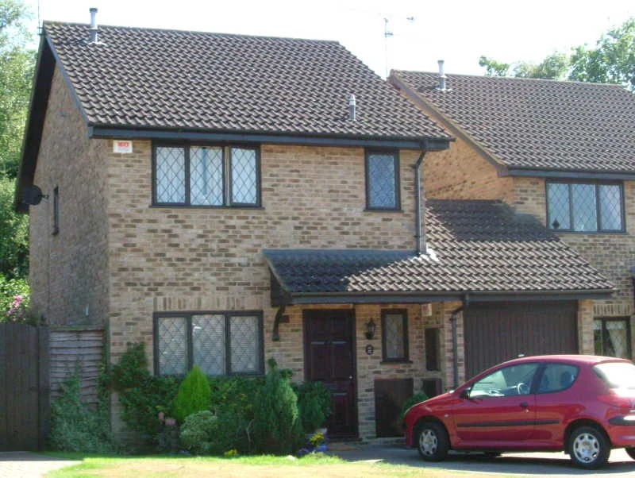
El número 4 de Privet Drive es el hogar de la familia Dursley, y de Harry Potter desde 1981 hasta 1998. La calle está compuesta por casas similares y tiene un aspecto muy pulcro. Es un lugar muy tranquilo y definitivamente sin ninguna magia.
Está ubicado en Little Whinging, Surrey, al suroeste de Londres. Además de Privet Drive, hay otras calles en el vecindario, como Magnolia Road, Magnolia Crescent y Wisteria Walk. El Número 4 de Privet Drive es una casa grande y cuadrada, con jardines trasero y delantero, como corresponde al estatus de tío Vernon como director de empresa.
Después de que los padres de Harry Potter fueran asesinados por Lord Voldemort en el Valle de Godric el 31 de octubre de 1981, Albus Dumbledore organizó todo para que Harry se quedara a vivir en el numero 4 de Privet Drive, con sus familiares los Dursley: tía Petunia, tío Vernon y el primo Dudley.
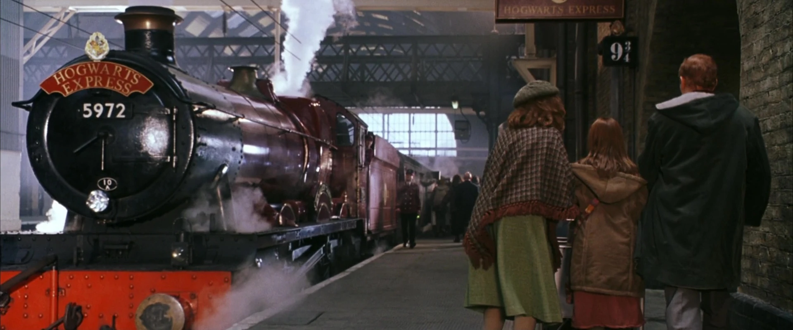
King's Cross aparece en los libros de Harry Potter, de J. K. Rowling, como el punto de partida del Expreso de Hogwarts. El tren utiliza un andén secreto, el 9¾, situado entre los andenes 9 y 10, al cual se accede por la barrera localizada entre dichos andenes 9 y 10.
Paradójicamente, los andenes 9 y 10 se encuentran en un edificio secundario separado del principal y se encuentran uno frente al otro con las vías del tren en medio. Al parecer, Rowling pretendía que ese andén secreto estuviera en la parte principal de la estación pero confundió los números de los andenes. En una entrevista concedida en el año 2001 reconoció que realmente había confundido las estación de King's Cross con la de Euston, lo cual explica la confusión en los números de los andenes.
En las películas basadas en los libros, se utilizó la estación principal de King's Cross, con los andenes 4 y 5 renumerados como 9 y 10 para el rodaje. En la película 'Harry Potter y la Cámara de los Secretos', se utilizó el exterior de la vecina estación de St. Pancras, dada la estética mucho más llamativa de la fachada gótica de ésta. En la actualidad, en reconocimiento a la fama que la serie de "Harry Potter" ha dado a la estación, se ha instalado una señal en hierro forjado del "Andén 9¾" sobre una pared del edificio secundario en el que se encuentran los andenes auténticos 9 y 10. También hay un carrito porta equipaje que parece que está a medio atravesar la pared, en referencia a la obra, en la que para acceder al susodicho andén hay que atravesar la pared.
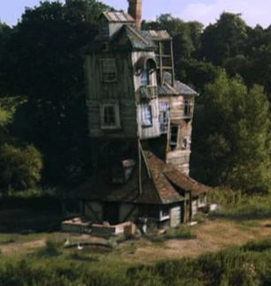
La Madriguera es la casa de la familia Weasley en la serie de Harry Potter, creada por J.K. Rowling. Situada en las afueras de Ottery St Catchpole, en Devon, Inglaterra, esta estructura caótica y encantadora desafía las leyes de la física muggle gracias a la magia. Es el hogar de Arthur y Molly Weasley y sus siete hijos: Bill, Charlie, Percy, Fred, George, Ron y Ginny. La casa, aunque pequeña y algo deteriorada, refleja el carácter amoroso y desorganizado de la familia, llena de calidez y hospitalidad. La vida en La Madriguera está llena de magia cotidiana, con Molly manejando las tareas domésticas mediante encantamientos y Arthur con su fascinación por los objetos muggles.
La Madriguera es un refugio para Harry Potter, ofreciéndole el cariño y apoyo que le faltan en su vida con los Dursley. Este hogar sirve como escenario para muchas escenas importantes en los libros, desde celebraciones de cumpleaños hasta reuniones de la Orden del Fénix. Entre los momentos clave están el rescate de Harry en "La Cámara Secreta", el ataque de los Mortífagos en "El Príncipe Mestizo" y la boda de Bill y Fleur en "Las Reliquias de la Muerte". Cada uno de estos eventos resalta la importancia de La Madriguera como un lugar de seguridad y comunidad en medio de la lucha contra Voldemort.
Más allá de ser un simple hogar, La Madriguera simboliza la resistencia, el amor y la comunidad en la serie. A pesar de su falta de riquezas materiales, los Weasley poseen una abundante riqueza de espíritu y solidaridad, que inspiran a Harry y a otros personajes. La casa destaca los valores fundamentales de amistad, familia y valentía en tiempos de adversidad, recordando a los lectores la importancia de estos valores en la lucha contra la oscuridad.
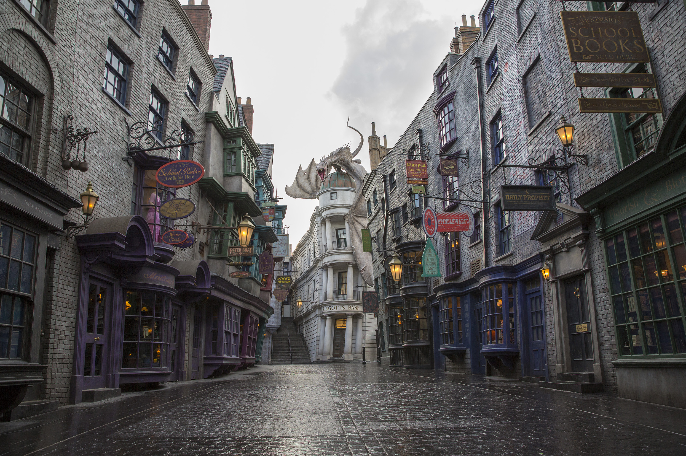
El Callejón Diagon es una calle oculta en Londres, accesible solo para aquellos en el mundo mágico. Es el principal centro comercial de la comunidad mágica, donde brujas y magos pueden encontrar una variedad de tiendas y servicios especializados. Para los muggles, el callejón es invisible y puede ser accesado a través del Caldero Chorreante, un pub oculto que sirve de conexión entre el mundo mágico y el muggle. Una vez dentro, el Callejón Diagon ofrece un espectáculo vibrante de actividad, con edificios antiguos y calles empedradas llenas de tiendas que venden todo tipo de productos mágicos.
Entre los establecimientos más destacados del Callejón Diagon se encuentran Ollivanders, la famosa tienda de varitas donde Harry Potter obtiene su primera varita; Gringotts, el banco de los magos custodiado por duendes; y Flourish and Blotts, la librería mágica que abastece a los estudiantes de Hogwarts. También se pueden encontrar tiendas especializadas en ropa como Madame Malkin, artículos de Quidditch, ingredientes de pociones, animales mágicos y artículos de broma como los de Sortilegios Weasley, la tienda de los hermanos Fred y George Weasley.
El Callejón Diagon no solo es un centro comercial, sino también un lugar lleno de historia y cultura mágicas. Es donde los jóvenes magos experimentan su primera inmersión en el mundo mágico y se preparan para su educación en Hogwarts. A lo largo de los libros, el callejón es un lugar recurrente que refleja tanto la vibrante vida diaria de los magos como los tiempos oscuros bajo la amenaza de Voldemort, mostrando cómo la comunidad mágica persevera y se adapta a los cambios y desafíos.
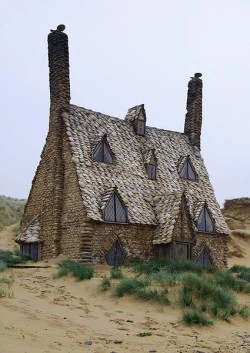
El Refugio es una casa segura utilizada por Harry Potter, Hermione Granger y Ron Weasley durante su búsqueda de los Horrocruxes de Voldemort en "Harry Potter y las Reliquias de la Muerte". Situada en la costa cerca de Tinworth en Cornwall, es el hogar de Bill Weasley y Fleur Delacour después de su matrimonio.
Después de escapar de la Mansión Malfoy, Harry, Ron, Hermione, Luna Lovegood, Dean Thomas, el Sr. Ollivander y Griphook el duende son llevados al Refugio por Dobby, el elfo doméstico, quien muere en el rescate. En el Refugio, se recuperan de sus heridas y planean su siguiente movimiento. Es un lugar de descanso y planificación crucial en su misión contra Voldemort.
El Refugio no solo sirve como un escondite, sino que también representa un símbolo de resistencia y esperanza. Proporciona un breve respiro del peligro constante y permite a los personajes reflexionar sobre sus objetivos y prepararse para las batallas finales que los esperan. En medio de la guerra, este lugar seguro y protegido es fundamental para su lucha contra las fuerzas oscuras.
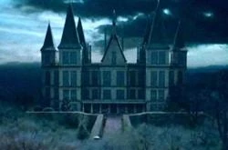
La Mansión Malfoy es la ancestral residencia de la familia Malfoy, ubicada en el campo de Wiltshire, Inglaterra. Es una imponente mansión rodeada de extensos terrenos, jardines bien cuidados y protegida por hechizos poderosos. La casa refleja el estatus y la riqueza de la familia Malfoy, caracterizada por su opulencia y antigüedad.
Durante la Segunda Guerra Mágica, la Mansión Malfoy se convierte en la sede de Lord Voldemort y sus Mortífagos. Lucius Malfoy, el patriarca de la familia, permite que la mansión sea utilizada como base de operaciones del grupo oscuro, buscando restaurar su estatus y favor con Voldemort después de su caída en desgracia. La mansión es testigo de numerosos eventos oscuros y crueles, incluyendo torturas y encarcelamientos. Uno de los eventos más significativos que tienen lugar en la Mansión Malfoy es la captura y encarcelamiento de Harry Potter, Hermione Granger y Ron Weasley junto con otros personajes como Luna Lovegood, Dean Thomas, el Sr. Ollivander y Griphook el duende. Durante su cautiverio, Hermione es torturada por Bellatrix Lestrange en una de las habitaciones de la mansión.
La mansión también es el escenario de un audaz rescate, llevado a cabo por Dobby, el elfo doméstico liberado por Harry. Dobby ayuda a los prisioneros a escapar, aunque sacrifica su vida en el proceso. Este evento marca un punto de inflexión en la guerra contra Voldemort, ya que los héroes logran escapar y continuar su lucha. La Mansión Malfoy, por tanto, no solo simboliza el poder y la riqueza de la familia, sino también el miedo y la opresión que Voldemort y sus seguidores intentan imponer sobre el mundo mágico.
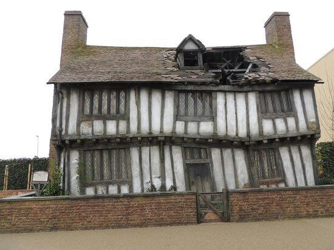
El Valle de Godric es un lugar emblemático dentro del mundo mágico de Harry Potter, ubicado en algún punto del sur de Inglaterra. Este valle es conocido por ser el sitio donde se fundó el pueblo de Godric's Hollow, una comunidad mágica con una larga historia y rica en tradiciones. El valle es nombrado en honor a Godric Gryffindor, uno de los cuatro fundadores de la escuela Hogwarts de Magia y Hechicería.
Godric's Hollow es famoso por varias razones. En primer lugar, es el lugar de nacimiento de Godric Gryffindor, quien es venerado como uno de los más grandes magos de la historia. Además, la familia Potter tiene una conexión profunda con el pueblo, ya que tanto Harry Potter como sus padres, James y Lily Potter, vivieron allí. La casa donde nació y vivió Harry, conocida como la Casa de los Potter, es un destino de peregrinación para muchos seguidores de la saga.
Sin embargo, el Valle de Godric también es conocido por un evento trágico y significativo en la historia de Harry Potter: la noche en que Voldemort asesinó a los padres de Harry, Lily y James Potter, y trató de matar al propio Harry cuando era un bebé. Este intento fallido de asesinato condujo a la derrota inicial de Voldemort y lo marcó como el "niño que vivió". El valle, por tanto, es un lugar cargado de historia y emociones, representando tanto la grandeza como la tragedia del mundo mágico.
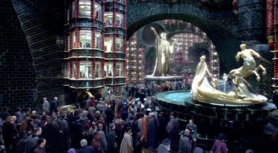
El Ministerio de Magia es la máxima autoridad del mundo mágico en la serie de Harry Potter. Ubicado en Londres, Inglaterra, el Ministerio es responsable de regular y gestionar todos los asuntos relacionados con la comunidad mágica británica. Este organismo desempeña un papel crucial en la aplicación de la ley mágica, la administración de la justicia y la regulación de la magia en general.
El Ministerio de Magia está dividido en varios departamentos, cada uno encargado de diferentes aspectos de la vida mágica. Entre ellos se encuentran el Departamento de Regulación y Control de Criaturas Mágicas, el Departamento de Coordinación de Hechizos Experimentales, y el Departamento de Seguridad Mágica. Además, el Ministerio cuenta con la Oficina del Magistrado, encargada de llevar a cabo juicios y aplicar sanciones a los infractores de la ley mágica.
El edificio del Ministerio de Magia es un lugar impresionante y misterioso, oculto a la vista de los muggles por medio de encantamientos. Se accede al Ministerio a través de la estación de metro de King's Cross, donde los magos y brujas utilizan una entrada secreta en forma de una cabina telefónica que conduce a los atrios del edificio. Dentro del Ministerio, los empleados utilizan una red de chimeneas conectadas para desplazarse rápidamente entre diferentes departamentos y lugares.
A lo largo de la serie de Harry Potter, el Ministerio de Magia es un escenario importante para la trama, ya que representa la institución encargada de mantener el orden y la seguridad en el mundo mágico. Sin embargo, también se muestra que el Ministerio está plagado de corrupción y burocracia, lo que lo hace vulnerable a la influencia de individuos como Voldemort y sus seguidores.
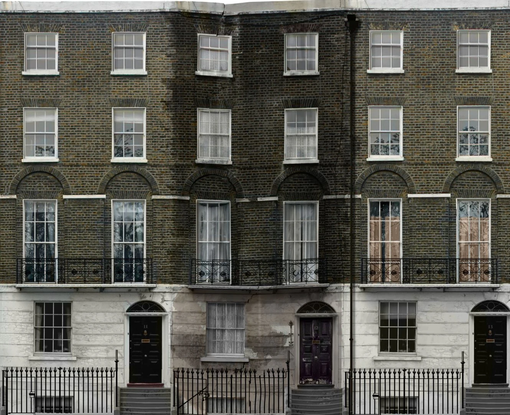
Grimmauld Place es una dirección significativa en la serie de Harry Potter, situada en el número 12 de la calle del mismo nombre, en Londres. Esta casa, que pertenecía a la familia Black, es un lugar clave en la lucha contra Lord Voldemort y sus seguidores, los Mortífagos. Originalmente, Grimmauld Place sirvió como la residencia de la familia de Sirius Black, quien heredó la propiedad después de la muerte de su madre, Walburga Black.
La casa es descrita como sombría y lúgubre, con una fachada deteriorada que refleja la decadencia de la familia Black. Sin embargo, detrás de su apariencia desaliñada, Grimmauld Place alberga secretos importantes y un vínculo con la Orden del Fénix, una organización dedicada a combatir a Voldemort y proteger a la comunidad mágica.
Después de la muerte de Sirius, la casa se convierte en la sede de la Orden del Fénix en la lucha contra Voldemort durante la Segunda Guerra Mágica. Bajo el liderazgo de Albus Dumbledore, la casa se utiliza como un lugar seguro para planificar estrategias y coordinar operaciones contra las fuerzas oscuras.
A lo largo de la serie, Grimmauld Place se convierte en un símbolo de resistencia y solidaridad, donde los miembros de la Orden del Fénix se reúnen para enfrentar los desafíos del mal que amenaza al mundo mágico. Aunque inicialmente asociada con la oscuridad y el prejuicio de la familia Black, la casa se transforma en un refugio para aquellos que luchan por la libertad y la justicia en la comunidad mágica.
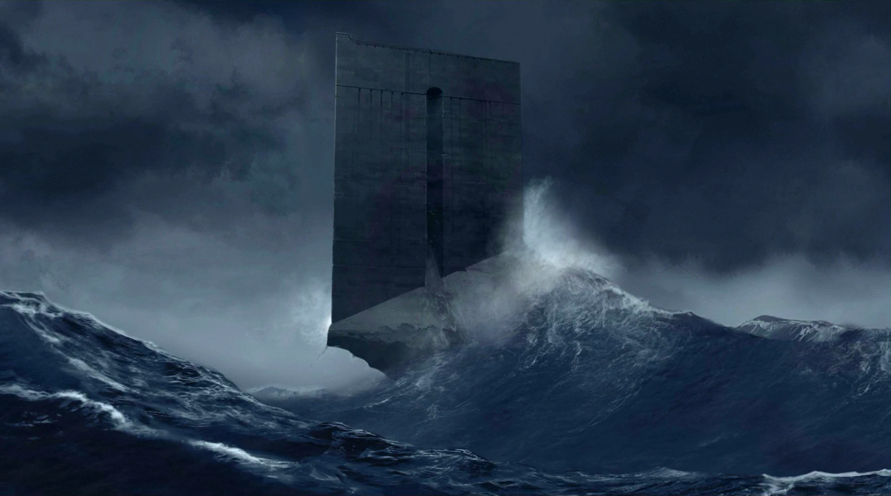
Azkaban es una infame prisión mágica ubicada en una isla remota en el Mar del Norte. Construida en el siglo XV como una fortaleza para albergar a magos oscuros y peligrosos, Azkaban se convirtió en una prisión de alta seguridad exclusivamente para magos y brujas condenados por crímenes mágicos.
La prisión está rodeada por un mar embravecido y está custodiada por los Dementores, criaturas mágicas siniestras que se alimentan de las emociones humanas, particularmente del miedo y la desesperación. La presencia constante de los Dementores convierte a Azkaban en un lugar extremadamente desolador y aterrador, lo que hace que incluso los prisioneros más fuertes y valientes sufran un grave deterioro emocional y mental durante su encarcelamiento.
Los prisioneros de Azkaban son encerrados en celdas individuales sin ventanas y pasan sus días en completa oscuridad, aislamiento y desesperación. La mayoría de ellos son sometidos a un estado de depresión y desesperanza debido al constante acecho de los Dementores y las condiciones inhumanas de la prisión.
A lo largo de la serie de Harry Potter, Azkaban es el lugar donde se encierra a algunos de los antagonistas más temidos, como Sirius Black y Bellatrix Lestrange. Su mera mención evoca terror y desesperación en la comunidad mágica, y su reputación como un lugar de sufrimiento extremo y desesperanza lo convierte en un símbolo de la crueldad del sistema de justicia mágico.
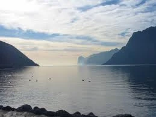
El Lago Negro es un cuerpo de agua oscuro y misterioso ubicado en los terrenos de Hogwarts, la escuela de magia y hechicería. Se encuentra al pie de las colinas que rodean el castillo y es conocido por su profunda oscuridad y sus aguas tranquilas, que reflejan las sombras de los árboles circundantes y las nubes que se deslizan sobre el cielo.
El lago es el hogar de varias criaturas mágicas, como el Calamar Gigante, una criatura marina de enormes proporciones que vive en las profundidades del lago y es conocida por su comportamiento pacífico. También se dice que el lago alberga a los Sirenos, seres mitológicos con aspecto humano y cola de pez que cantan hermosamente para atraer a los incautos.
Durante el año escolar, los estudiantes de Hogwarts pueden disfrutar de actividades junto al lago, como paseos en botes o relajarse en sus orillas. Sin embargo, también se considera un lugar peligroso, especialmente para aquellos que se aventuran demasiado cerca de sus profundidades desconocidas. A lo largo de la serie de Harry Potter, el Lago Negro sirve como telón de fondo para varias escenas importantes y misteriosas, agregando un aura de intriga y maravilla al mundo mágico de Hogwarts.
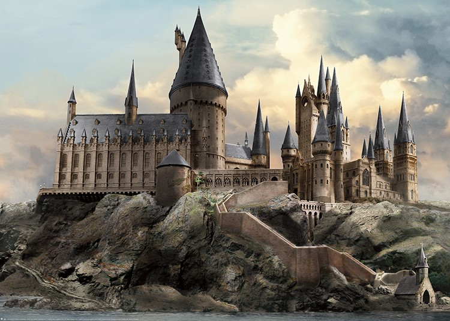
Hogwarts es la prestigiosa escuela de magia y hechicería ubicada en algún lugar de Escocia. Fundada hace más de mil años por los cuatro grandes magos Godric Gryffindor, Helga Hufflepuff, Rowena Ravenclaw y Salazar Slytherin, Hogwarts es el hogar de jóvenes brujas y magos de todo el Reino Unido y más allá. La escuela se encuentra en un castillo antiguo y majestuoso, rodeado de terrenos extensos que incluyen un lago, un bosque prohibido y muchos otros lugares de interés mágico.
Hogwarts está dividida en cuatro casas: Gryffindor, Hufflepuff, Ravenclaw y Slytherin, cada una representada por uno de los fundadores y cada una con sus propias cualidades y valores. Los estudiantes son seleccionados para sus casas a través del famoso Sombrero Seleccionador, que evalúa sus características y preferencias antes de tomar una decisión. A lo largo del año escolar, los estudiantes asisten a clases de una variedad de materias mágicas, como Pociones, Defensa contra las Artes Oscuras, Transformaciones y muchas más.
Además de las clases académicas, Hogwarts ofrece una amplia gama de actividades extracurriculares, como el Quidditch, un deporte de escoba voladora muy popular entre los estudiantes, y clubes como el Club de Duelo y la Sociedad de Protección de Criaturas Mágicas. La escuela también alberga eventos especiales, como el Baile de Navidad y el Torneo de los Tres Magos, que atraen a estudiantes y visitantes de todo el mundo mágico.
A lo largo de la serie de Harry Potter, Hogwarts sirve como escenario principal para las aventuras de Harry Potter y sus amigos, Ron Weasley y Hermione Granger, mientras luchan contra las fuerzas del mal, descubren secretos antiguos y aprenden valiosas lecciones sobre la amistad, el coraje y el poder del amor. Es un lugar de magia, misterio y aprendizaje, donde los jóvenes magos y brujas descubren su verdadero potencial y forjan vínculos que durarán toda la vida.
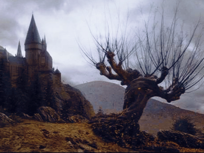
El Sauce Boxeador es un árbol mágico ubicado en el terreno de Hogwarts, específicamente en el Bosque Prohibido. Este árbol posee una peculiaridad única: puede mover sus ramas y tronco de manera violenta y rápida, como si estuviera boxeando, de ahí su nombre.
El Sauce Boxeador es conocido por su agresividad y peligrosidad, ya que ataca todo lo que se encuentre a su alcance cuando se siente amenazado o provocado. Su comportamiento lo convierte en un obstáculo temido por los estudiantes y profesores que deben cruzar el Bosque Prohibido.
En la trama de la serie de Harry Potter, el Sauce Boxeador juega un papel importante en la tercera entrega, "Harry Potter y el Prisionero de Azkaban". En esta historia, Harry, Ron y Hermione se ven obligados a cruzar el Bosque Prohibido para llegar a una ubicación específica en la escuela. En su camino, son atacados por el Sauce Boxeador y se ven obligados a descubrir el secreto para evitar ser golpeados por sus ramas en movimiento.
El Sauce Boxeador es un ejemplo de la diversidad y la magia que habita en el mundo de Harry Potter, agregando un elemento de peligro y emoción a las aventuras de los personajes en Hogwarts.
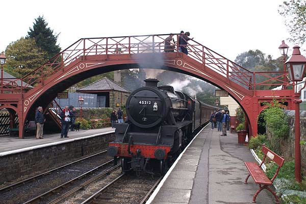
La Estación de Hogsmeade es el punto de llegada para los estudiantes de Hogwarts que desean visitar el pueblo de Hogsmeade durante el año escolar. Situada cerca del colegio, es la única estación de tren en la que el Expreso de Hogwarts hace parada, facilitando así el acceso de los estudiantes al pueblo.
Esta estación es de vital importancia para la comunidad mágica, ya que conecta Hogwarts con el mundo exterior y permite a los estudiantes disfrutar de las visitas autorizadas a Hogsmeade, el único pueblo completamente mágico en Gran Bretaña. Aquí, los estudiantes pueden explorar las tiendas, cafés y otros lugares de interés, como La Cabeza de Puerco o Las Tres Escobas.
La Estación de Hogsmeade es un punto de encuentro importante durante los viajes escolares y eventos especiales, como las visitas programadas a Hogsmeade durante el año académico. Su atmósfera acogedora y su conexión con el mágico pueblo hacen de esta estación un lugar querido tanto por los estudiantes como por los habitantes de Hogwarts y sus alrededores.
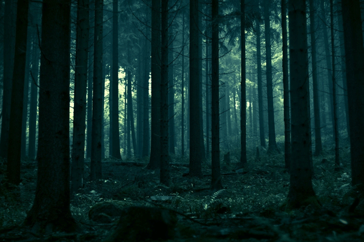
El Bosque Prohibido es un lugar misterioso y peligroso dentro del terreno de Hogwarts. Este bosque denso y oscuro, ubicado en las afueras de la escuela, está lleno de criaturas mágicas, plantas venenosas y otros peligros que hacen que los profesores de Hogwarts lo declaren fuera de los límites para los estudiantes sin supervisión.
A pesar de las advertencias, el Bosque Prohibido a menudo se convierte en escenario de aventuras para los estudiantes valientes y curiosos de Hogwarts. Harry Potter, Ron Weasley, Hermione Granger y otros personajes protagonizan varias incursiones en este bosque a lo largo de la serie, enfrentándose a peligros como arañas gigantes, centauros y otras criaturas fantásticas.
El Bosque Prohibido también desempeña un papel importante en la trama de la serie, ya que varios eventos clave tienen lugar en su interior, incluyendo encuentros con Voldemort y la búsqueda de objetos mágicos importantes. A pesar de su nombre y reputación, el Bosque Prohibido atrae la curiosidad de los estudiantes y sirve como un recordatorio constante de la naturaleza misteriosa y peligrosa del mundo mágico.

La Cabaña de Hagrid es el hogar de Rubeus Hagrid, el guardabosques de Hogwarts y querido amigo de Harry Potter y sus compañeros. Situada en las afueras del Bosque Prohibido, esta cabaña rústica es un lugar acogedor y lleno de peculiaridades, reflejando la personalidad excéntrica y el amor de Hagrid por las criaturas mágicas.
Construida con madera y piedra, la cabaña es de aspecto tosco pero acogedor, con un techo de paja y ventanas pequeñas que dejan entrar la luz natural. En su interior, la cabaña está decorada con una mezcla de muebles rústicos y objetos curiosos, como calderos, jaulas para criaturas y una gran cantidad de libros sobre cuidado de animales mágicos.
La cabaña de Hagrid sirve como refugio tanto para él como para las criaturas mágicas que cuida. A lo largo de la serie, Harry y sus amigos visitan la cabaña en numerosas ocasiones, ya sea para buscar ayuda o consejo de Hagrid, o para encontrarse con las fascinantes criaturas que habitan en sus alrededores.
Además de ser el hogar de Hagrid, la cabaña también es un lugar importante en la trama de la serie, ya que varios eventos cruciales tienen lugar allí, incluyendo reuniones secretas, revelaciones importantes y momentos emotivos entre los personajes. Con su atmósfera cálida y acogedora, la cabaña de Hagrid se convierte en un símbolo de amistad, aventura y magia en el mundo de Harry Potter.
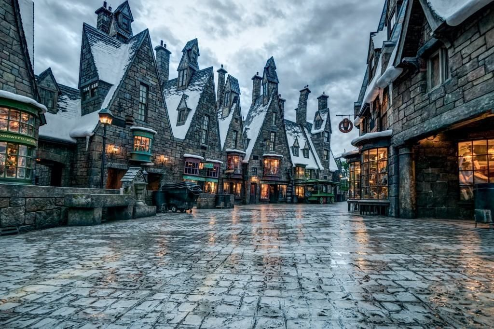
Hogsmeade es el único pueblo completamente mágico en Gran Bretaña y es un destino favorito para los estudiantes de Hogwarts en sus excursiones fuera del castillo. Ubicado cerca de la escuela, Hogsmeade es conocido por sus pintorescas calles adoquinadas y sus encantadoras tiendas, restaurantes y pubs, todos ellos atendidos por brujas y magos.
Entre los lugares más destacados de Hogsmeade se encuentra Las Tres Escobas, un popular pub donde los magos pueden disfrutar de una cerveza de mantequilla o socializar con amigos. También está Honeydukes, la tienda de golosinas más famosa del mundo mágico, donde se pueden encontrar todo tipo de dulces y chocolates mágicos.
La tienda de bromas Zonko's es otro lugar favorito entre los estudiantes, que pueden comprar todo tipo de artículos para sus travesuras. Además, los visitantes de Hogsmeade pueden explorar el famoso Emporio de la Lechuza, donde pueden adquirir todo lo necesario para sus mascotas mágicas.
Hogsmeade también es el lugar de encuentro de la estación de tren de Hogwarts Express, donde los estudiantes llegan en el tren desde la estación de King's Cross en Londres al comienzo de cada año escolar. Con su encanto único y su atmósfera mágica, Hogsmeade es un lugar especial en el mundo de Harry Potter, lleno de aventuras y experiencias emocionantes para los estudiantes de Hogwarts y los lectores por igual.
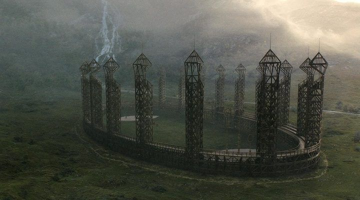
El Estadio de Quidditch es el lugar donde se celebran los emocionantes partidos de Quidditch, el deporte más popular del mundo mágico. Estos estadios suelen ser grandes y están equipados con todo lo necesario para albergar a miles de espectadores y proporcionar un entorno emocionante para el juego.
Los estadios de Quidditch suelen tener una forma circular o de cuenco, con gradas que rodean el campo de juego. Estas gradas están encantadas para garantizar la seguridad de los espectadores durante los partidos, ya que el Quidditch es un deporte rápido y peligroso que involucra a jugadores volando a gran velocidad en sus escobas.
En el centro del estadio se encuentra el campo de juego, que consta de tres aros de diferentes alturas en cada extremo. Estos aros son el objetivo para los cazadores y el guardián que intentan anotar puntos lanzando la quaffle a través de ellos. Además, en cada extremo del campo hay también un par de postes más altos, llamados aros, que son el objetivo para los buscadores que intentan atrapar la snitch dorada, una pelota pequeña y rápida que otorga a su equipo 150 puntos y termina el juego.
Los estadios de Quidditch suelen estar llenos de aficionados entusiastas que animan a sus equipos favoritos y disfrutan del espectáculo emocionante y lleno de acción que ofrece el deporte. Además de los partidos de Quidditch regulares, los estadios también pueden albergar eventos especiales como la Copa Mundial de Quidditch y otros torneos importantes. Sin duda, el Estadio de Quidditch es un lugar emblemático en el mundo mágico, donde se viven momentos emocionantes y se celebra la pasión por este deporte único.
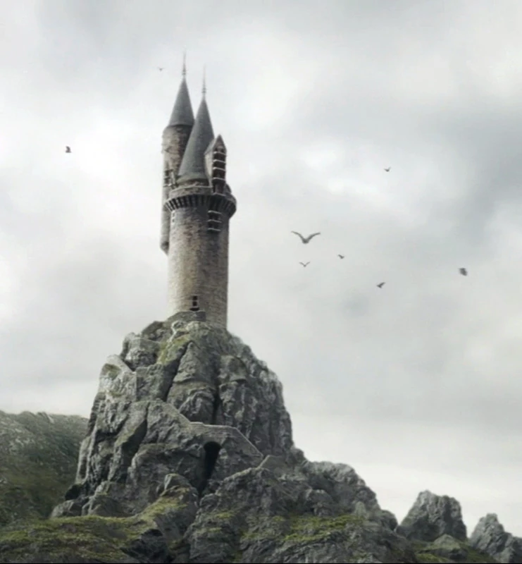
La lechucería es un lugar crucial en el mundo mágico donde se gestionan las comunicaciones mediante lechuzas, las fieles aves mensajeras de los magos y brujas. Estas lechucías suelen ubicarse en lugares estratégicos, como en el caso de Hogwarts, donde se encuentra en la Torre Oeste del Castillo. En la lechucería, se pueden enviar y recibir cartas, paquetes e incluso periódicos a través de las lechuzas que están entrenadas para llevar los mensajes a su destino.
Las lechuzas son animales inteligentes y confiables, capaces de encontrar el camino a cualquier destino, incluso si el destinatario se encuentra en un lugar desconocido o escondido. Además, cada lechucía tiene su propia personalidad y habilidades únicas, lo que las convierte en compañeras valiosas para los magos y brujas en su vida cotidiana.
En Hogwarts, la lechucería es un lugar bullicioso y animado, donde las lechuzas entran y salen constantemente, llevando mensajes entre los estudiantes, el personal y sus familias. Los estudiantes pueden enviar mensajes a sus hogares, recibir noticias de sus amigos y familiares, e incluso solicitar suministros especiales a través de las lechuzas de la escuela.
Además de servir como un medio de comunicación, la lechucería también es un lugar de encuentro para los amantes de las aves y aquellos que desean aprender más sobre el cuidado y la crianza de las lechuzas. En resumen, la lechucería es un elemento esencial en el mundo mágico, facilitando la comunicación y conectando a las personas de una manera única y especial.